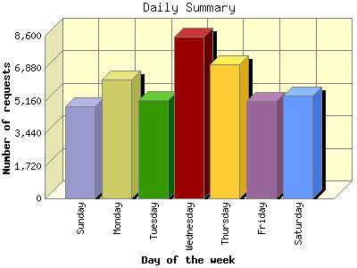

Report generated by Analog 6.0 and Report Magic 2.21
|
Web Server Statistics for "Harish Narayanan (hnarayan) - January 2008" Report generated by Analog 6.0 and Report Magic 2.21 |
The Daily Summary identifies the level of activity as a total for each day of the week. This summary also compares the level of activity on weekdays and weekends as a total for the report time frame.


| Day of the week | Number of requests | Number of bytes transferred | Percentage of the bytes | Percentage of the requests | |
|---|---|---|---|---|---|
| 1. | Sunday | 4,880 | 203.791 MB | 10.27% | 11.46% |
| 2. | Monday | 6,282 | 269.137 MB | 13.57% | 14.75% |
| 3. | Tuesday | 5,183 | 231.187 MB | 11.65% | 12.17% |
| 4. | Wednesday | 8,549 | 457.370 MB | 23.06% | 20.08% |
| 5. | Thursday | 7,079 | 330.259 MB | 16.65% | 16.62% |
| 6. | Friday | 5,170 | 183.999 MB | 9.28% | 12.14% |
| 7. | Saturday | 5,438 | 307.817 MB | 15.52% | 12.77% |
| Total Weekdays | 32,263 | 1.437 GB | 74.21% | 75.77% | |
| Total Weekend | 10,318 | 511.608 MB | 25.79% | 24.23% | |
This report was generated on March 24, 2008 11:59.
Report time frame January 1, 2008 00:07 to January 31, 2008 23:58.
| Web statistics report produced by: | |
 Analog 6.0 Analog 6.0 |  Report Magic 2.21 Report Magic 2.21 |